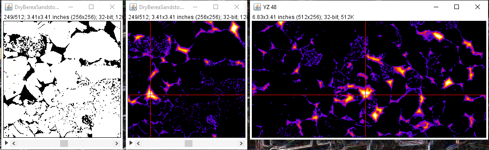

3D Exact Euclidean Distance of a sandstone pore space.
LazzyIzzi's Projects
This site is currently under construction. Last Updated 4/18/22
My projects are mainly centered around ImageJ plugins and Excel Add-ins for quantitative x-ray microtomography and 3d image processing . There is also an Excel Application for managing car shows and a few other diversions.
Java Libraries
CT_Tools_Lib- A NIST-XCOM derived library for calculating photon photoelectric absorption, scatter and pair-production cross-sections between 1keV and 100GeV (Z≤100). Additional methods include computing the bremsstrahlung output of a conventional x-ray source using the Kramers equation and methods for simulating parallel and fan beam sinograms by scanning digital images of linear attenuation using either mono or polychromatic x-rays.
Flood_Tools_Lib - Methods for computing 2D and 3D Euclidean and geodesic transforms that support physical dimensions. This library also includes a closely related single pressure simulation of mercury injection capillary pressure
CT_Tools_Lib1 based ImageJ plugins
Materials Editor - Read me First! View and edit the default list of tags and their respective formulas and densities. See the X-ray Calculator for an example of a plugin that uses the materials list.
Material Tagger - Convert ranges of image brightness to tag2 values of materials of known composition and density.
TagSlice to MuLin - Convert tagged images to total linear attenuation at a single x-ray energy.
X-ray Calculator - Plot photon cross-sections for formulas and atoms using tabulated XCOM data. Interpolates cross-sections at intermediate single energies.
X-ray Lookup - Look-up X-ray energies that produce a measured cross-section or cross-section ratio for formulas and atoms.
Scanner Setup - An interactive tool for optimizing radiographic and tomographic image acquisition conditions.
2D Scanners - A suite of four plugins to create total attenuation monochromatic or bremsstrahlung sinograms from 2D images of linear attenuation or tagged1 compositions and densities.
Linearization - A pair of plugins for finding and applying attenuation linearization.
Find Linearization - compares a beam hardened reconstructed slice to an ideal model of the same slice and uses ImageJ's curve fitting methods to obtain polynomial coefficients for correcting the original sinogram attenuations.
Apply linearization - Correct beam hardened sinogram attenuations using the best linearization fit.
Flood_Tools_Lib based ImageJ plugins
Exact Euclidean - Exact Euclidean distance map of 2D and 3D segmented images using Danielsson's algorithm.
HybridFlood - Geometry based simulation of non-wetting imbibition in an image of a random porous medium.
HybridFlood Search - Bisection Search to find the "Breakthrough" pore radius or porosity in an image of a random porous medium.
HybridFlood Scan - Floods an image of a random porous medium at incrementally decreasing pore radius or porosity.
Excel VBA Projects
MuMassCalculator.xlam - An Excel Add-in for NIST-XCOM derived photon cross-sections and other X-ray calculations. It's pretty handy for routine calculations and testing ideas.
CarShowHelper - An Excel application for managing car shows. A menu-driven record keeper for registration, classification, judging, and tally that maintains a ever-green contact list of show participants.
1. Why libraries? The libraries contain no ImageJ dependencies for better performance and can be used anywhere. Many thanks to all who built the ImageJ UI to plug into.
2. Simulating bremsstrahlung sinograms from a digital image requires calculating the linear attenuation of each material in the image at many different energies. Tags are unique integer values assigned to a material and are used to create a look-up table of that material's properties.
About LazzyIzzi